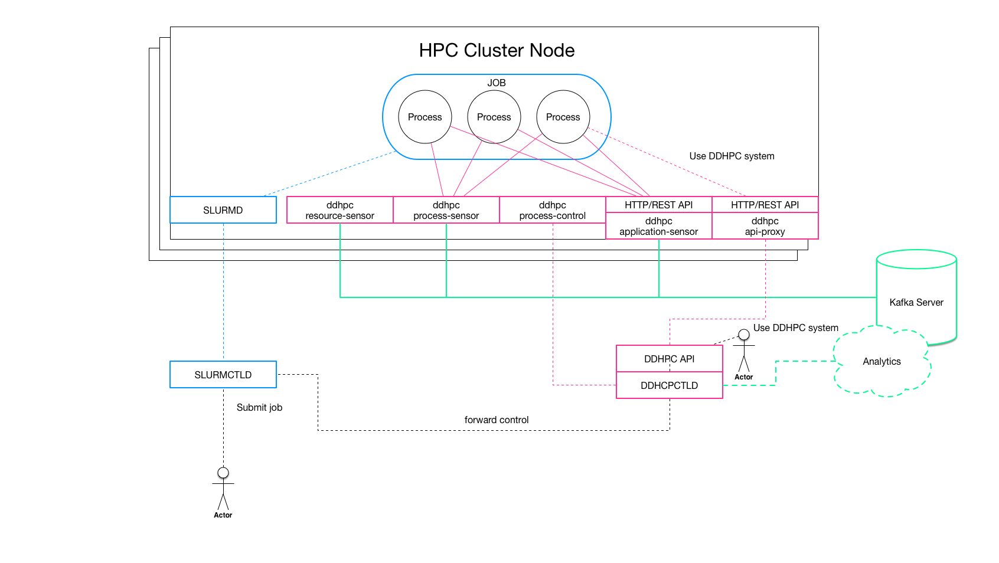
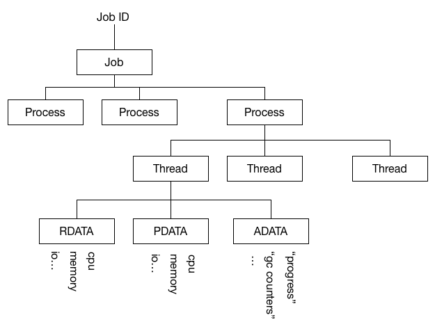

Towards a Unified Telemetry Data Framework for HPC Environments
|
Ole Weidner School of Informatics University of Edinburgh ole.weidner@ed.ac.uk |
Adam Barker School of Computer Science University of St Andrews adam.barker@st-andrews.ac.uk |
Malcolm Atkinson School of Informatics University of Edinburgh malcolm.atkinson@ed.ac.uk |
International Workshop on Runtime and Operating Systems for Supercomputers
Washington, D.C., USA, June 27, 2017
Talk Outline
- Application Challenges & Motivation
- Telemetry Data as Platform Service
- Graph-Based Platform Model (Context Structure)
- Unified Programming Interface
- Prototype Implementation
- Outlook & Next Steps
Application Challenges & Motivation
Scenario 1: Degraded Disk I/O

Describe the single box plot here. Describe how this leads to longer execution times + wasted credits
Scenario 1: Observation

Show second plot comapring with I/O throughput (find correct OS metric) trend.
Scenario 1: Contextualization

Show heatmap and show how faulty nodes caused the issue.
Scenario 2: Network Issues

Describe the single box plot here. Describe how this leads to longer execution times + wasted credits
Scenario 2: Observation

Show second plot comapring with I/O throughput (find correct OS metric) trend.
Scenario 2: Contextualization
Show heatmap and explain how faulty network switch caused issues
Scenario 3: Dynamic Memory Requirements
Describe the single box plot here. Describe how this leads to longer execution times + wasted creditsScenario 3: Observation
Show second plot comapring with I/O throughput (find correct OS metric) trend.Scenario 3: Contextualization
Show heatmap and explain.Lessons Learned
Argue high costs of creating insights, time + cpu hours and discuss problem of data without strucutre / model.Telemetry Data as Platform Service
TOPIC A
Requirements
TOPIC C
Challenges
TOPIC A
TOPIC B
TOPIC C
Another Definition of 2nd Gen Apps
"Second generation HPC applications require continuous access to operational data in order to observe their behavior and the behavior of their environment so they can operate efficiently."
Problem
Observing on a small scale, in a desktop environment is (relatively) simple
On a large scale on an HPC platform it is very difficult
Why is it difficult?
- User's line-of-sight ends at the job-level
- Data collection requires application instrumentation
- Collection and transport at scale is non-trival
- Identifying anomalies and patterns in a stream of data is not trivial (especially at scale)
Result: Many applications continue to "fly blindly"
Requirements
In order to implement strategies against "flying blindly", applications require an environment which provides:
- infrastructure to transport, analyze, store application data (at scale)
- comprehensive real-time operational data from the HPC platform
- mechanisms to interact with the platform to implement feedback loops
Data-Driven HPC Idea
Apply principles, architectures and tools from "big data" / large-scale data analytics to manage application and platform operational data:
- Look at HPC clusters and their application as large-scale distributed continuous sensor data
- Use scalable transport mechanisms to move the data from their sources into an analytics pipeline
- Use real-time, stream processing to analyze the data for anomalies, patterns, etc.
- Integrate this with HPC platforms
Maps our problem to a well-known space with many established solutions
Challenge 1: Scale
How do we handle (operational) data at scale without impeding the performance of the platforms or applications
- How to collect data at scale?
- How to transport data at scale?
- How to analyze data at scale?
Challenge 2: Scope and Expertise
Different user and application groups require data at different levels, from raw data to high-level signals. How do we account for different requirements? How do we support a broad level of expertises? The majority of users are not data scientits.
Challenge 3: Control and Feedback
Once we have signals, how can we react to them. How do we interact with the resource manager? Where can decision logic be implemented?
Challenge 4: Integration
How would a data-driven platform be integrated with HPC systems? How do we bridge the gap to the resource management / queuing systems? How to avoid disruptiveness?
Research Approach
Build a prototype Data-Driven HPC system that handles data collection and addresses the scale challanges. Explore the other challanges within this prototype, define the research questions.
DDHPC Prototype

DDHPC Architecture
DDHPC Data Model
Allows "hollistic", drill-down view of application jobs:
- Job level > process level > thread level
- Resouce Data
- CPU counters, memory and filesystem metrics, network and disk I/O counters,
- Process Data
- CPU counters, memory and filesystem metrics, network and disk I/O counters,
- Custom application-defined data
DDHPC Data Model
DDHPC API
- Provides access to application job data
- Allows definition of signals based on data
- Provides callbacks when a signal is triggerd
- Allows to access application process controls
Data Collection
A set of data collection services run on each node and forward data to the Kafka messaging servers
- ddhpc-resource-sensor: collects resource-level data
- ddhpc-process-sensor: collects process-level data
- ddhpc-application-sensor: records custom application signals
Control & Data Access
API endpoints and process controller allow application processes to be modified and to access the DDHPC system
- ddhpc-api-proxy: local forwarding agent and cache for the API to prevent bottlenecks.
- ddhpc-process-controller: can set process niceness and I/O niceness
Where are we? Next steps.
- Simple prototype implemented alongside a 4-node SLURM "toy" cluster in AWS
- First version of data model and API
- Implement some application use-cases.
- Explore different ways to react to signals:
- programmatically in the application
- via user-defined, high-level rules in the system
- How do we evaluate? What are the metrics of "success"?
THANK YOU
Slides available online:
https://oweidner.github.io/ross-2017-talk